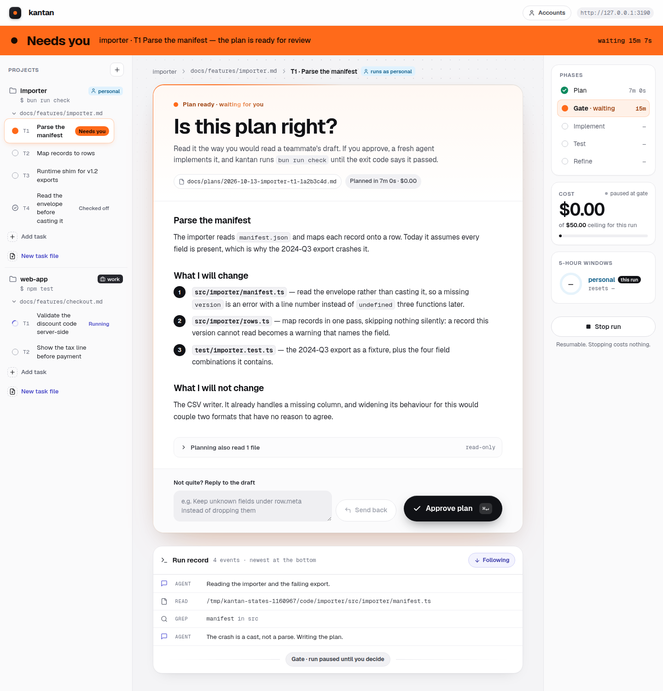
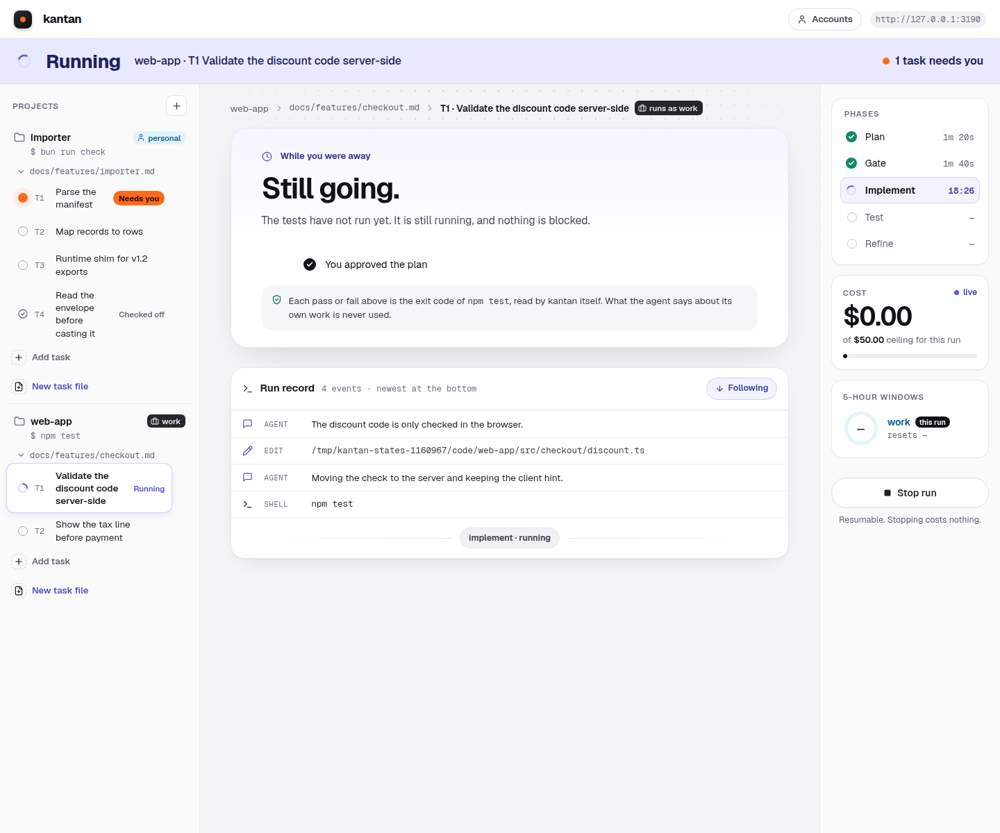
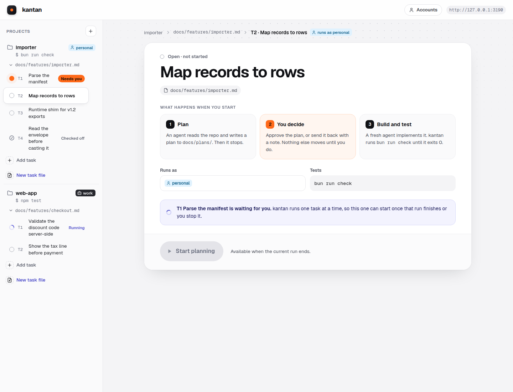

簡単 kantan: simple, brief
A local web UI that drives the real claude CLI through one coding task at a
time. It reads your repo and writes a plan. You say yes, or send it back with a note.
Then a fresh agent implements it and kantan runs your tests until the exit code
says they pass.

It spawns the real claude binary rather than reimplementing an agent loop, so your
CLAUDE.md, skills, plugins, hooks, settings and auth all load exactly as they do in your
terminal. There is nothing to port and nothing to configure twice.
An agent reads your repository and writes a plan to
docs/plans/. Then it stops. It has not touched your code yet.
You read it the way you would read a teammate's draft. Approve it, or send it back with a note and it plans again. Nothing else moves until you decide — this is the only step kantan cannot do without you, and that is the point.
A fresh agent implements the plan on its own
kantan/<task> branch. Fresh, not the same conversation: that is what lets the
two phases run different models without cold-starting the prompt cache.
kantan runs your test command and reads the exit code. Not the agent — the server. On a failure it refines and runs them again, escalating effort when the same failure repeats.
The task's checkbox is ticked and the branch is yours. The checkout returns to your base branch. If there was no test command to run, the screen says “Self-checked” rather than claiming a pass.
| Noun | Is actually | Lives in |
|---|---|---|
| Project | a repo directory, a test command (or none), a Claude account | ~/.kantan/projects.json |
| Feature | a markdown file | <repo>/docs/features/<slug>.md |
| Task | a - [ ] line in that file | the same file |
| Run | one task through the pipeline | ~/.kantan/runs/<uuid>.jsonl |
Three of those four already exist on your disk. Your backlog is markdown in your own repo, in your own git history — kantan renders it and remote-controls it, and never owns it.
kantan spawns your test command itself and branches on the exit code. Never on the agent reporting success. Verification from outside the agent cannot be talked out of.
A project may have no test suite, and then the agent checks itself. kantan records which happened, and prints “Self-checked” — never an exit code, a tick, or the word passed. An older log reads “unknown”, never as a pass.
Two agents can never share a working tree. A task that cannot start explains itself in a sentence instead of greying a button out.
kantan ran bun run check itself and read exit code 0. The agent's opinion of its own
work was never consulted.


Read this part first, because it is the whole design. Every one of these is a reaction to a tool that started well and drifted — the ceremony tends to grow faster than the usefulness.
claude -p, so you do not have to.These cost real money to discover. Every script behind them is rerunnable in
docs/probes/, so you can check rather than trust — and they are useful even if you
never run kantan.
AskUserQuestion does not exist in -p mode. The agent asks in prose
and exits subtype: success, so a question and a completion are indistinguishable by
message type. Never infer completion from exit status.--max-budget-usd bounds one process, not your run. Cost resets on every
--resume, so a ceiling set per process silently restarts at each gate. Track the total
yourself and pass ceiling − spent.system/hook_* messages arrive
before the first real one. Filter at parse.The pipeline runs end to end against the real binary, from one process on one port. 73 modules, 2,576 tests. The one skipped test is the live smoke test, which spawns the real CLI and is gated so it cannot spend money in CI.
src/run.ts is 2,695 lines of one state machine. Measured, not excused: 34 of its
67 functions mutate the same object.